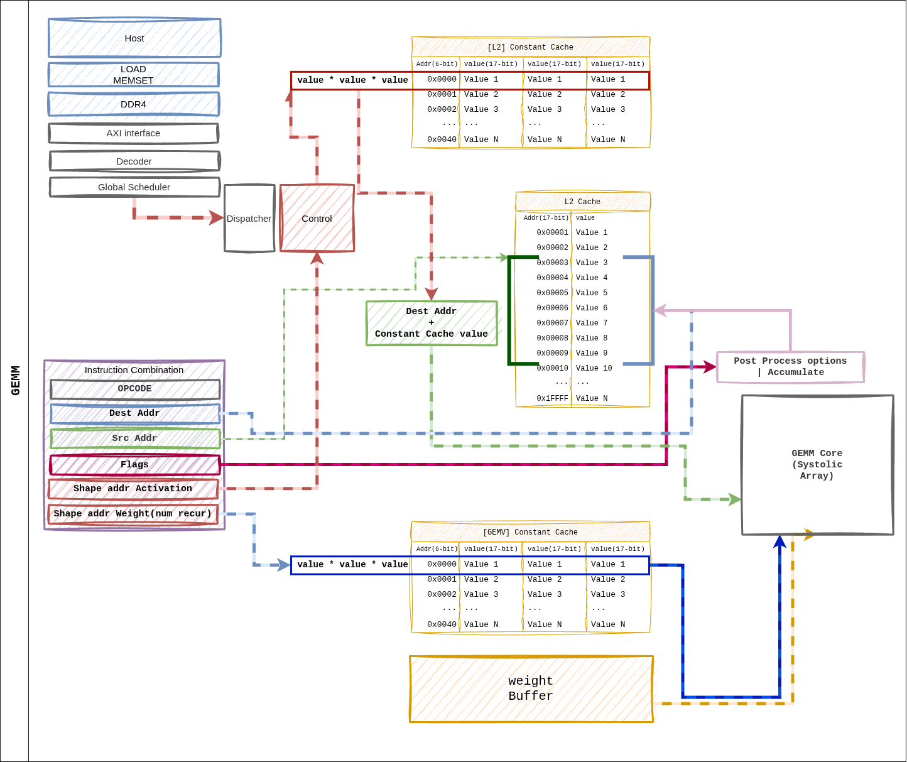
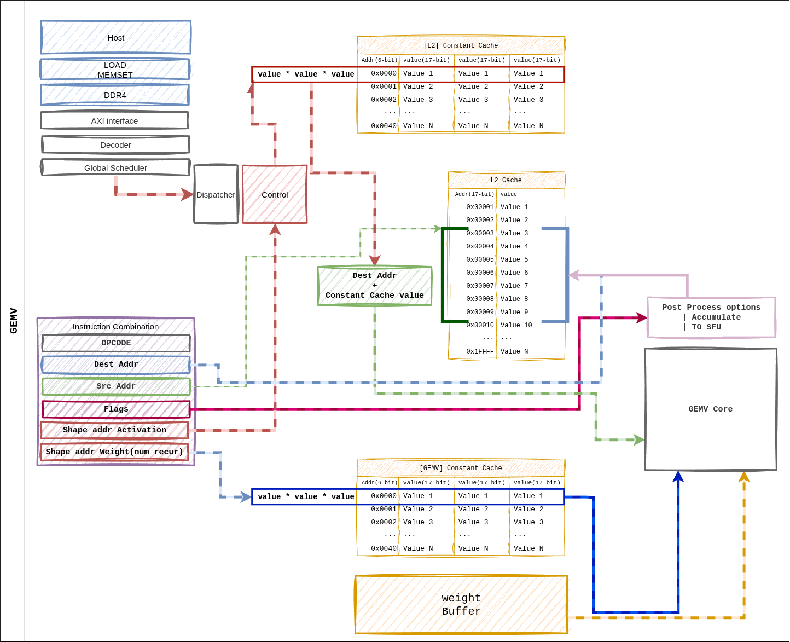
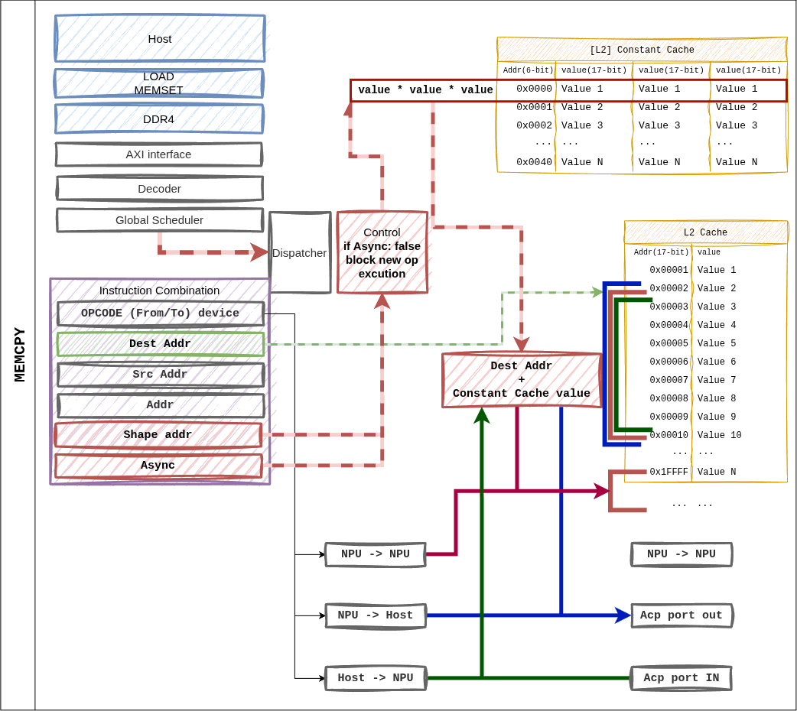
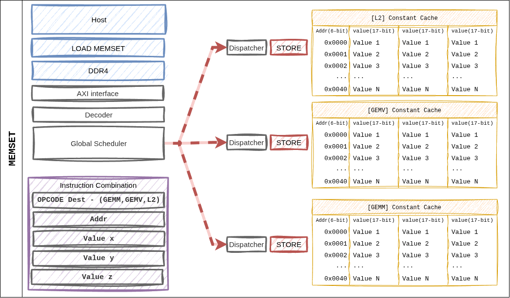

명령어별 데이터플로우#
각 오피코드가 디스패치된 후 실제 하드웨어 상에서 데이터가 어떻게 이동하는지를 도식화합니다. 아래 그림들은 탑레벨 아키텍처 의 블록 다이어그램을 명령어 관점에서 재구성한 것입니다.
1. GEMM#
{kind=link}

Figure 5. GEMM 명령어 디스패치 시의 데이터 경로. dest_addr / src_addr 은 L2 Cache 주소공간을, shape/size pointer 는 Constant Cache 인덱스를 가리킵니다.#
경로 요약#
Dispatcher 가
shape_ptr_addr/size_ptr_addr로 Constant Cache 조회 → 타일 파라미터 취득.Weight Buffer 가 HP 포트에서 가중치 행렬 을 타일 단위로 프리페치.
L2 Cache
src_addr→ 시스톨릭 어레이로 액티베이션 스트리밍.시스톨릭 어레이가 Weight Stationary 로 누적 → Accumulator → Post-Process.
결과가 L2 Cache
dest_reg에 기록.
2. GEMV#
{kind=link}

Figure 6. GEMV 명령어 데이터 경로. GEMM 과 동일한 ISA 레이아웃이지만, 가중치는 Weight Streaming 으로 소비되며, 4 개 GEMV 코어가 병렬 분배됩니다.#
경로 요약#
Dispatcher 가 포인터 조회 → GEMV 코어별 shape 분배.
Weight Buffer → 4 개 GEMV 코어로 행 단위 분할 스트리밍.
L2 Cache → GEMV 코어의 L1 Cache 로 액티베이션 프리로드.
코어 내부 8 레인 MAC + 3 단 reduction tree → 스칼라 결과.
Post-Process (scale, bias) → L2 Cache 또는 SFU 직결.
3. MEMCPY#
{kind=link}

Figure 7. MEMCPY 명령어.
from_device / to_device 비트 조합으로 호스트 ↔ NPU, NPU ↔ NPU
전송을 모두 지원합니다.#
지원 조합#
from_device |
to_device |
경로 |
|---|---|---|
1 (Host) |
0 (NPU) |
ACP → L2 Cache 기록. 가중치/입력 로딩에 사용. |
0 (NPU) |
1 (Host) |
L2 Cache → ACP. 결과 토큰 / KV 캐시 반환. |
0 (NPU) |
0 (NPU) |
L2 내부 블록 간 이동 (디바이스 내 재배치). |
async 비트가 1 이면 디스패치 후 즉시 다음 명령어로 진행.
Global Scheduler 가 완료 fence 를 추적합니다.
4. MEMSET#
{kind=link}

Figure 8. MEMSET 은 Dispatcher 에서 직접 Constant Cache 로 값을 기록합니다. L2 Cache 를 경유하지 않는 유일한 명령어입니다.#
특징#
한 명령어로 최대 3 개의 16-bit 값(
a,b,c) 을 동시 기록.컨텍스트: 레이어 시작 시 (M, N, K) 튜플 초기화, weight/activation scale factor 주입.
dest_cache필드가 대상 캐시 뱅크를 선택 (fmap_shape vs weight_shape).
5. CVO (SFU)#
CVO 는 별도 데이터플로우 다이어그램이 없으나, 아래 경로를 따릅니다.
Dispatcher
│
▼
cvo_control_uop_t → SFU 뱅크 (32×1 × 4)
▲
│ L2 Cache ``src_addr`` ─── 입력 벡터
│
▼
함수 파이프라인 (CORDIC / LUT)
│
└─► L2 Cache ``dst_addr`` / GEMV 직결 FIFO
Fast Path: 직전 GEMV 결과를 SFU 가 즉시 소비하는 경우, src_addr 를 special tag 로 지정하여 L2 왕복을 생략합니다. 이 최적화는 Dispatcher 의 의존성 추적 로직이 자동 판단합니다.
6. 의존성과 완료 통지#
명령어 간 의존성은 Global Scheduler 가 다음 두 정보로 해소합니다.
Address Hazard: dest / src L2 주소의 read-after-write 검사.
Resource Hazard: GEMM·GEMV·SFU 자원의 점유 상태.
비동기 명령어(async = 1) 의 완료는 fsmout_npu_stat_collector
블록이 수집하여 AXI-Lite STAT_OUT 레지스터로 호스트에 통지합니다.